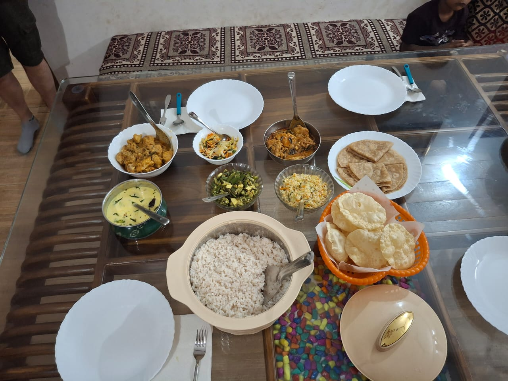
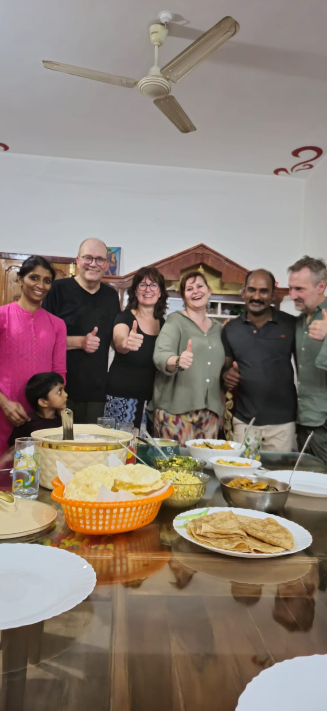
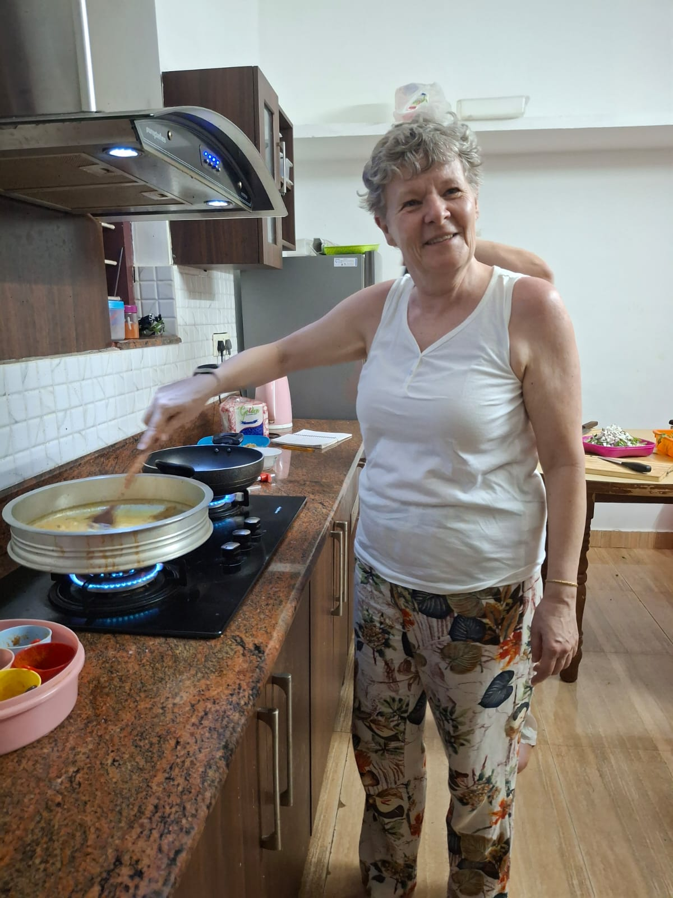
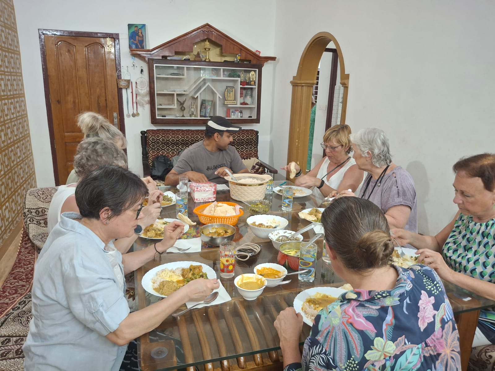

Cooking Class
Learn vegetable curry, chicken curry, fish curry, chapati, rice, side dishes, and Kerala-style desserts through a guided cooking session.
Authentic Kerala food, warm family hosting, real tourist experience
Join a friendly home-style cooking class in Kumily near Thekkady and learn traditional Kerala dishes using fresh spices, coconut, vegetables, and local cooking methods.
Why guests choose us
Sera's Cooking Class offers a personal Kerala cooking experience where travelers can learn, cook, taste, and enjoy local dishes in a comfortable family atmosphere. Our classes are ideal for couples, families, solo travelers, and food lovers who want something more meaningful than a normal restaurant meal.
You will learn how Kerala food uses cardamom, pepper, cinnamon, coconut, curry leaves, vegetables, fish, or chicken in practical home-style recipes that are easy to understand and memorable to make again.
Gallery preview




Learn vegetable curry, chicken curry, fish curry, chapati, rice, side dishes, and Kerala-style desserts through a guided cooking session.
We help visitors planning activities in Kumily and Thekkady, including sightseeing ideas, local experiences, and arrival assistance.
Our greatest advantage is our real guest experience, genuine hospitality, and memorable home-cooked food that travelers love sharing online.
Google reviews
Our visitors often share their happiness about the food, friendly hosting, and authentic Kerala kitchen atmosphere.
Location
Sera's Cooking Class is located in Attappallam, Kumily 685509, Kerala. After sightseeing in Thekkady, travelers can enjoy a practical cooking session and traditional meal in a relaxed family setting.